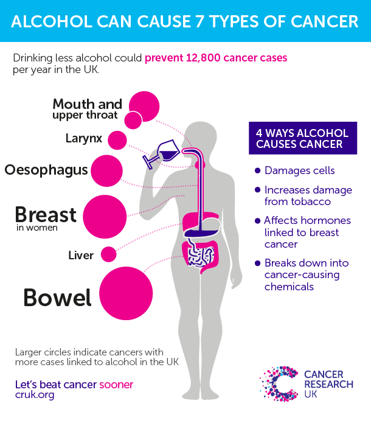

Alcohol’s impact on your body starts from the moment you take your first sip. While an occasional glass of wine with dinner isn’t a cause for concern, the cumulative effects of drinking wine, beer, or spirits can take its toll.Read on to learn the effects of alcohol on your body.
Drinking too much alcohol on a regular basis is harmful to your health.
Alcohol is a drug that affects every body system, though the detrimental effects vary for each individual.
Here are some key points about chronic heavy drinking. More detail and supporting information is in the main article.